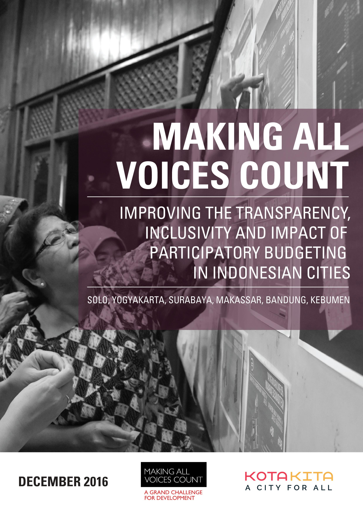
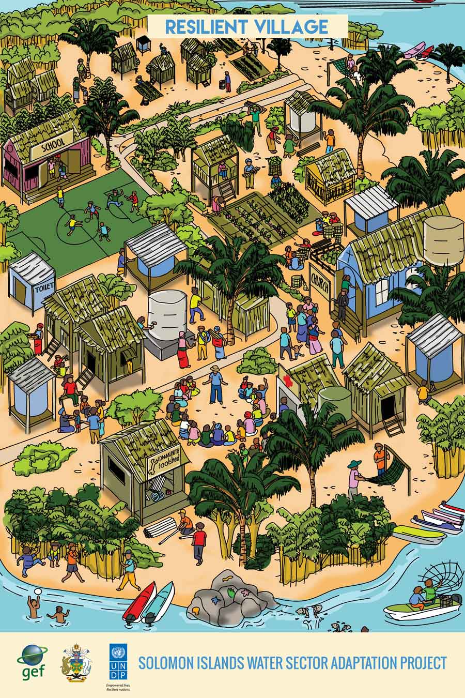
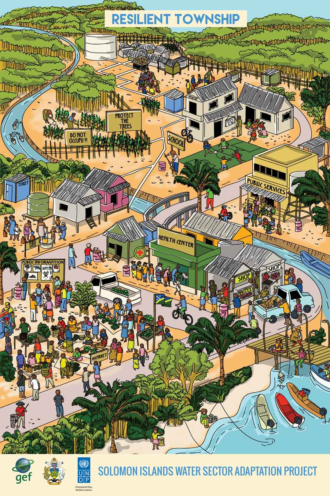
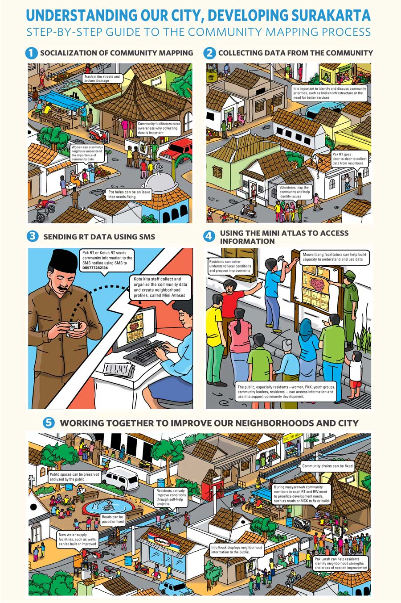
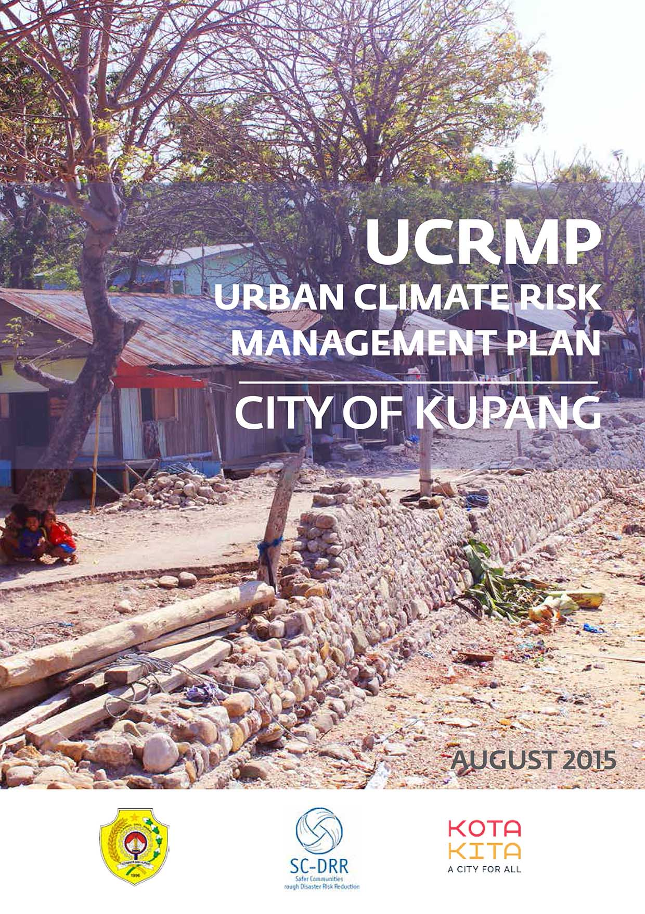
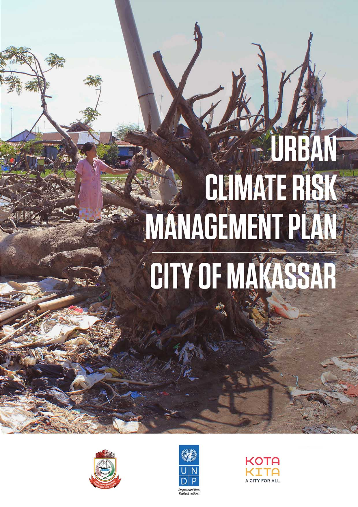
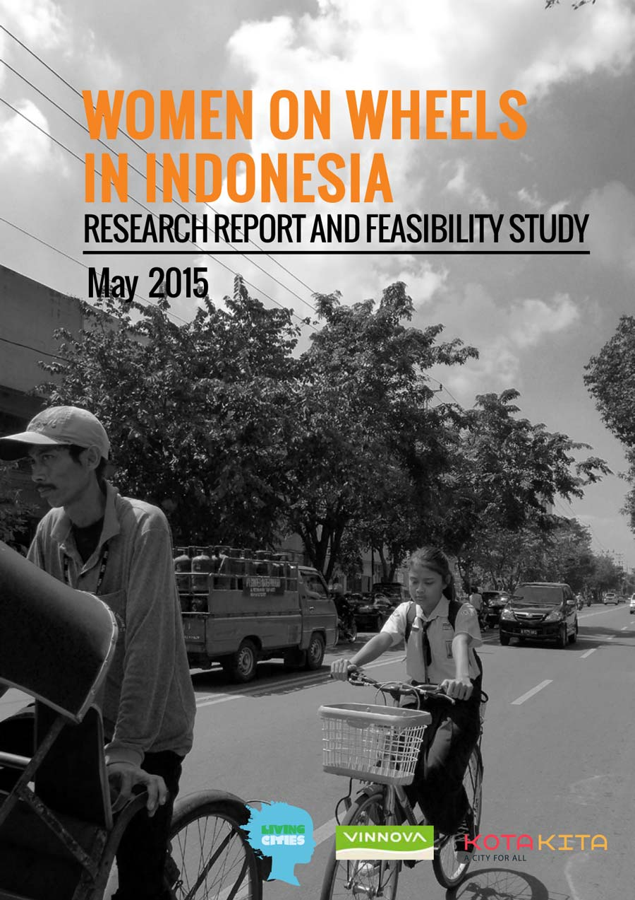

Our Publications


Making All Voices Count: Improving the Transparency, Inclusivity and Impact of Participatory Budgeting in Indonesia
Kota Kita, 2016



Resilient & Vulnerable Village, Solomon Islands Water Sector Adaptation Project
Kota Kita, 2016

Resilient & Vulnerable Township Posters, Solomon Islands Water Sector Adaptation Project
Kota Kita, 2016

Understanding Our City, Developing Surakarta: Step-by-step Guide to the Community Mapping Process
Kota Kita, 2016

Lessons from Improving a Gender-based Climate Change Vulnerability Assessment
Kota Kita, 2016



Urban Climate Risk Management Plan – City of Kupang
UNDP, City Government of Kupang, 2015


How Can Climate Change Vulnerability Assessments Best Impact Policy and Planning: Lessons from Indonesia
IIED, 2015

A Tale of Two Cities: Comparing Alternative Approaches to Reducing the Vulnerability of Riverbank Communities in Two Indonesian Cities
Environment and Urbanization, 2015

Urban Climate Risk Management Plan – City of Makassar
UNDP, City Government of Makassar, 2015



Women on Wheels in Indonesia, Research Report & Feasibility Study
Living Cities & Vinnova, 2015


Doing More with Less – Resource Challenges for Secondary Cities in South-East Asia The New Urban: Towards Progressive Secondary Cities
OXFAM, 2014


Social Field Design Guide A Handbook from Experiences in Participatory Design in Indonesia
Kickstarter Campaign, 2014


When non-climate urban policies contribute to building urban resilience to climate change: lessons learned from Indonesian cities Asian Cities Climate Resilience Working Paper Series
IIED, 2013

City and Community Profile: Solo, Central Java, Indonesia Participatory Approaches to Community Water Management
National University of Singapore, 2013


Informal Public Transportation Networks in Three Indonesian Cities Jogyakarta, Solo, Palembang
CDIA, 2011


Padang House by House: A Housing and Vulnerability Assessment Padang, West Sumatra
Mercy Corps, 2010

Colored Water Assessment of Climate Change Vulnerability in Kelurahan Pabean, Pekalongan, Central Java
UN HABITAT, 2010

Solo Kota Kita Facilitator Manual A Facilitator's Guide to Using a Mini Atlas
Kota Kita, 2010